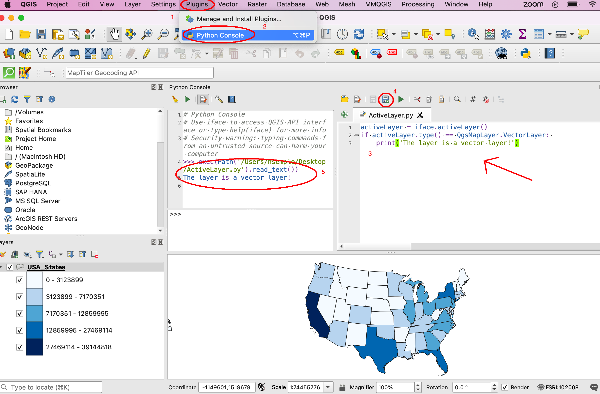

4. Conditional Statements and Looping
4.1. Conditionals
Unless otherwise directed, lines of codes in a procedure run sequentially, from first to last. Conditional statements can change the sequential flow of a program based on whether a given condition is true or false.
Python uses the If statement for testing conditions. If the condition is true, then the code block following the if statement is executed. If it is not true, the program jumps to the end of the code block.
In Python, a colon is placed at the end of the statement that contains the condition, and the lines below the condition statement are indented.
There are three types of conditional structures in Python:
– if ..– if.. else– if ..elif .. else
The If.. Conditional Structure
The structure of the if .. conditional statement is shown below.
1if condition: # i.e., if the variable is defined
2 execute statement
If the condition is true, that is, if the variable is defined, then the block following will be executed. An example of the structure is shown below.
1var1 = "blue"
2if var1:
3 print ("The sky is blue.")
Here is a another example involving the if statement.
1 number = 10
2 if number > 0:
3 print('Number is', number)
The code sample below contains an if statement and should be run in QGIS. It tests whether the active layer in the Table of Content is a vector layer. In the code sample, the iface object is used to retrieve the active layer in the Canvas. Once the active layer is retrieved, the code checks if it is a vector layer. If it is vector layer, then it prints a message indicating that the layer is a vector layer.
1activeLayer = iface.activeLayer()
2if activeLayer.type() == QgsMapLayer.VectorLayer:
3 print('The layer is a vector layer!')
To run the code, look at the numbered elements in the illustration below. First, click on Plugin in the main menu, then click on Python Console. When the Python Console opens, click on the Show Editor button and paste the code into the Editor. Next, click the Save button then run the code by clicking on the green player button.
The If.. Else Conditional Structure
The if-else statement is designed to execute what follows after either the true part or false part of a condition. If the condition evaluates to true, then the if block code is executed. If the condition is false, the else block code is executed.
1if condition: # if condition is true.
2 execute this statement
3else:
4 execute this statement
Here is an example of the if .. else statement.
1answer = int (input("Please enter a number: "))
2if answer == 15:
3 print ("The number " + str(answer) + " is my lucky number.")
4else:
5 print (The number " + str(answer) + " is not my lucky number.")
Here is another example of the use of an if .. else statement.
1x = int(input ("Please enter a number between 0 and 100: "))
2
3if x%2 == 0:
4 print('{} is divisible by 2'.format(x))
5else:
6 print('{} is not divisible by 2'.format(x))
This ‘if .. else’ example should be run in QGIS.
1 activeLayer = iface.activeLayer()
2 if activeLayer.type() == QgsMapLayer.VectorLayer:
3 print('The layer is a vector layer!')
4 else:
5 if activeLayer.type() == QgsMapLayer.RasterLayer:
6 print('The layer is a raster layer!')
The If.. elif.. Else Conditional Structure
The if.. elif.. else statement is designed to test multiple conditions and make decisions. The basic structure is given below:
1if condition:
2 execute statements
3
4elif condition:
5 statements ...
6
7else:
8 statements
Here is a simple example of the use of an if.. elif.. else statement.
1# Guess a number
2import random
3
4answer = int(input ("Please enter a number between 0 and 100: "))
5
6x = random.randint(0,100)
7
8print ("You entered", answer)
9
10if answer == x:
11 print ("That's my lucky number.")
12
13elif answer > x:
14 print ("That number is too large to be my lucky number")
15
16else:
17 print ("That's too small to be my lucky number")
4.2. Comparison Operators
- Python has many different operators for testing conditions including:
- == (Double equal sign) : tests equality, is equal to!= (Excl. mark and equal sign): tests inequality, is not equal to>, < (greater than, less than)
A single equal sign ‘=’ is used to assign values to variables. The double equal sign ‘==’ is used to test for equality of two variables. An exclamation mark and an equal sign are use to test for inequality.
The code sample below shows a simple test for inequality. The code tests whether two lists have the same length.
1list1 = [11, 21, 34, 12, 31, 26, 70, 67]
2list2 = [23, 25, 54, 24, 20, 35, 40, 46]
3
4if len(list1) == len(list2):
5 print("The lists have equal lengths")
6else:
7 print("The lists have unequal lengths")
4.3. Looping
In programming, looping is used to execute a block of code repeatedly until a certain condition is met. It is a simple concept that has widespread usage in programming.
Python uses the for loop and the while loop for iteration or repetitions. For loops are used when you know, beforehand, the amount of times you want to loop. While Loops enable you to test for a particular condition and are used when you don’t know beforehand how many times the loop will occur.
4.4. For Loops
The general pattern of the for loop is illustrated below.
1for var in sequence: # for each item of a variable that is in a particular sequence
2 statements # do something.
Examples
1x = [1, 2, 3, 4, 5]
2for num in x:
3 print (num)
1for num in range(1,6):
2 print (num)
Notes: The variable name “num” is a made-up one. You can use any name. In Pyhton, range () is a function that takes a lower and upper value (1,6). The range function returns a list of numbers between the given range.
For Loops and Lists
For loops are great for manipulating lists
1a = [‘cat’, ‘dog’, ‘window’, ‘Main Street’]
2 for x in a:
3 print (x)
Nested For Loops
1suits = ['Spades', 'Clubs', 'Diamonds', 'Hearts']
2values = ['Ace', 2, 3, 4, 5, 6, 7, 8, 9, 10, 'Jack', 'Queen', 'King']
3for suit in suits:
4 for value in values:
5 print (str(value) + " of " + str(suit))
6
7 print ( " " )
In the above code, the program enters the first loop visiting “Spades”, then immediately jumps to the nested loop printing out the value for each card. When the program reaches the end of the list of “values’, it jumps out of the nested loop and return to the first loop to get to “Clubs. Next, it loops through all values in the second suit and print the card names. This process continues until all the suits and values have been looped through.
Multiplication Tables
1for i in range(1,13):
2 for j in range (1,13):
3 print (i * j, end="\t")
4 print ("")
Note: In the above code, end=”t” put a tab after each multiplication.
Looping through a list of Roads
The code below uses a ‘for loop’ to step through a list of road types. For each each element of the list, an action is performed, i.e., the item is printed out in upper case. Normally, more complex action is performed.
1listOfRoadTypes = [‘Highway’,’Street’,’Boulevard’]
2for RoadType in listOfRoadTypes:
3 print RoadType.upper()
Using ArcPy to Loop through a List of fields in a Shapefile’s Attribute Table
Run the code in Jupyter Notebook that is attached to ArcGIS Pro or Python 2.7 that comes with ArcGIS Pro.
1import arcpy
2arcpy.env.workspace = "c:/data"
3
4fieldlist = arcpy.ListFields("roads.shp")
5 for field in fieldlist:
6 print (field.name, field.type, field.length)
Using ArcPy to Loop through a List of all the Feature Classes in a Directory or a Geodatabase
1import arcpy
2arcpy.env.workspace = "C:/data"
3
4fcList = arcpy.ListFeatureClasses ()
5 for fc in fcList:
6 print (fc)
Using Arcpy to get a List of all the rasters in a Directory or a Geodatabase
1import arcpy
2arcpy.env.workspace = "C:/data/dems"
3
4rasters = arcpy.ListRasters("*", "GRID")
5for raster in rasters:
6 print(raster)
Using QGIS to Get a list of features in a shapefile
1for f in layer.getFeatures():
2 print (f)
QGIS - Get selected features
1activeLayer = iface.activeLayer()
2if activeLayer.type() == QgsMapLayer.VectorLayer:
3 print('The layer is a vector layer!')
4
5for f in activeLayer.selectedFeatures():
6 print (f.attributes())
7 print ("")

QGIS - Getting the attributes of the active shapefile
1activeLayer = iface.activeLayer()
2if activeLayer.type() == QgsMapLayer.VectorLayer:
3 print('The layer is a vector layer!')
4
5
6for f in activeLayer.getFeatures():
7 print (f.attributes())
8 print ("")
1 for feature in layer.getFeatures():
2 print(feature)
3 print(feature.id())
4 print(feature['NAME'])
5 print('-----')
4.5. For Loops with Break and Continue
Break
Break is typically part of a conditional looping situation in the program. If the “if condition” evaluates to false, break will not be activated and the program will keep looping normally. If the condition evaluates to true, ‘break’ is activated and the code jumps out of the loop entirely and moves to the next block in the program.
Run the code below to study “break”
1for letter in 'Python':
2 print (letter)
3 if letter == 'h':
4 break
5print ('Hello World')
#2nd Example Although the maximum value in the range is 100 million, as soon as the loop gets to 5, the condition evaluates to true, so the program breaks out of the pattern.
1for i in range (100000000):
2 print (i)
3
4 if i > 5:
5 break
6 else:
7 print ('hello')
Run the code below to study “continue”
When the condition evaluates to false, the program will keep looping. normally. When it evaluates to true, it will stop executing that particular iteration of the loop and continue on to the next iteration in the loop.
Try the code below to see how ‘continue’ works.
1for letter in 'Python':
2 if letter == 'h':
3 continue
4 print ('Current Letter :', letter)
1for i in range (100):
2 print (i)
3 if i > 5:
4 continue
5 else:
6 print ('hello')
Summing Values in a List
When summing values in a list, you can iterate over the list of items and add each element to a variable which stores the sum of the ith element. The “+=” term tells Python to add the current sum to the next i in the list.
1L = [4, 5, 1, 2, 9, 7, 10, 8]
2
3# Initialize a variable to store the sum of the list
4sum = 0
5
6# Finding the sum
7for i in L:
8 sum += i
9
10print("sum = ", sum)
In many cases, instead of using the “+=” term, you will see people using “sum = sum + i” to add the current sum to the next i in the list:
1L = [4, 5, 1, 2, 9, 7, 10, 8]
2
3# Initialize a variable to store the sum of the list
4sum = 0
5
6# Finding the sum
7for i in L:
8 sum = X + i
9
10print("Sum = ", sum)
4.6. While Loops
While loops are used when you cannot predict at runtime the number of times an operation will occur. The basic while loop structure is shown below:
1while condition:
2 statements
As long as the condition is true, the while statement will execute. Each time a loop occurs, the value of the counter is increased by 1. Prior to the first loop, the counter x is equal to 1. Aftr the print statement, the 1 will be added to x thereby increasing its value to 2. At the beginning of the second loop, Python will check the value of x. Since x is less that 5, the loop will execute and the same pattern will be repeated. When x becomes 5, the expression will evaluaate to False and the loop halts.
Example 1
1x = 1
2while x < 5: # condition
3 print (x)
4 x = x + 1 # counter
Example 1
1x = 1
2while x < 5: # condition
3 print (x)
4x += 1 # counter
Example 3
1max = 5
2n = 1
3a = [ ] # Create empty list
4
5while n < max:
6 a.append(round((1.0/n),2)) # Append element to list
7 n = n + 1
8 print (a)
[1.0, 0.5, 0.33, 0.25]
Example 4
1 number = 23 2 running = True 3 4 while running: 5 guess = int(input('Enter an integer : ')) 6 if guess == number: 7 print ('Congratulations, you guessed it.') 8 running = False # this causes the while loop to stop 9 10 elif guess < number: 11 print ('No, your guess is too low.') 12 13 else: 14 print ('Incorrect Guess. Too high. Try again')
While Loop with “Continue” # Continue causes the program to break out of the particular iteration it is executing. See example below:
1number = 23 2 3while 1: 4 guess = int('Enter an integer : ')) 5 if guess == number: 6 print ("You guessed the correct number") 7 print ("Start a new round of guessing!") 8 continue 9 elif guess < number: 10 print ('No, it is a little higher than that.') 11 else: 12 print ('No, it is lower than that.')
While Loop Example With “Break” “Break” causes the program to jump out of the loop and move to the next block in the program” if one exists.
1number = 23 2 3while 1: 4 guess = int(input('Enter an integer : ')) 5 if guess == number: 6 print ('You guessed the correct number.') 7 break 8 elif guess < number: 9 print ('No, it is a little higher than that.') 10 11 else: 12 print ('No, it is lower than that.')
Repeating a program until the user wants to quit
1while 1: 2 num1 = float(input("Enter the first number: ")) 3 num2 = float(input("Enter the second number: ")) 4 num3 = float(input("Enter the third number: ")) 5 6 7 print ("The average of the numbers is", (num1 + num2 + num3) / 3) 8 9 10 y = int(input("Do you want to repeat? Enter 1 for yes, 2 for No")) 11 12 if y == 1: 13 continue 14 else: 15 print ("End of Program") 16 break 17 print("")
Looping, Performing Calculations and Populating an Empty List
Example
1nums = [0, 1, 2, 3, 4] 2squares = [ ] 3for x in nums: 4 squares.append(x ** 2) 5 print(squares)
List Comprehension
List comprehensions provide a concise way of looping, populating lists, and performing operations. The code below represents a typical way to loop and perform an operation on a set of numbers:
1nums = [ 1, 2, 3, 4] 2results = [ ] 3for x in nums: 4 results.append(x / 2) 5 6print(results)
[0.5, 1.0, 1.5, 2.0]
Instead of populating a list using the method shown above, you can reduce your looping code by using a list comprehension. The general syntax is:
new_list = [expression for member in iterable object, for loop to generate the numbers to feed into the expression]
#Example. Square the values in the list
1nums = [1, 2, 3, 4, 5]
2results = [x /2 for x in nums]
3print(results)]
[0.5, 1.0, 1.5, 2.0]
To use the syntax, do the following:
Define your list that you wish to iterate
Come up with a descriptive name for the result list, e.g., ‘results’.
Open a pair of square brackets and define the expression that will generate the values you want to store in the new list. In this example the expression is x/2, which divides each value in the list by 2.
Write a for loop to generate the numbers you want to feed into the expression. Notice that no colon is used at the end of the ‘for’ statement. The result is the same list of square numbers you saw earlier
The syntax can be expanded to include more than 1 for clause. It can also include if statements.
1nums = [0, 1, 2, 3, 4]
2squares = [x **2 for x in nums if x < 8]
3print(squares)]
4
5The list comprehension always returns a result list.
4.7. Exercises
Complete the practice exercises below. Submit screenshots in a word document as proof that you completed the exercises:
Given the list below, write a program that loops through the list and prints out each element in the list. Submit a screenshot showing your program code and the results of running the code.
my_list = [1,4,5,10, 34, 67, 89, 90, 124]
Write a program that squares each value in the list below and then prints out the squared values.
my_list = [11,14,15,100, 34, 67, 89, 90, 98]
Write a program that loops through values from zero to 50 and prints out every other value in the range.
Write a program that cumulatively adds the elements of the list below and prints out the results after each addition.
list1 = [11,21, 34, 12, 31, 55, 23, 24, 100, 56,90, 100]
Extend the spatial interpolation program you worked on in the first lab by adding looping functionality to the program. The program should work in this way: once the initial round of calculations are completed and the results printed to the screen, the code should prompt the user to enter a new set of z-values and associated distance values. The program should carry out the next round of calculations and then prompt the user again for values for an additional round of calculation. The program should keep looping until no more rounds of calculation are needed. At that stage, the user should be able to quit the program gracefully.
Look up how to work with ArcPy’s ListFeatureClasses function, then write Python code that uses ArcPy’s ListFeatureClasses function to print out a list of feature classes or shapefiles in one of your folders.
Run the codes in Section 4.1 of this document that deal with displaying layers in QGIS if the layer (either vector or raster) is an active layer. Run the code using your own data and show that you can display either a raster or vector in QGIS if it is an active layer.
In what way is the “Break” statment in Python different from “Continue”. Give coding examples to show the difference.
When is a “for loop” used in Python as opposed to a while loop. Give coding examples to support your answer.
Write a program to calculate the average of the numbers in the list below:
L = [41, 25, 21, 2, 96, 79, 108, 83,1,4,5,10, 34, 67, 89, 90, 124]